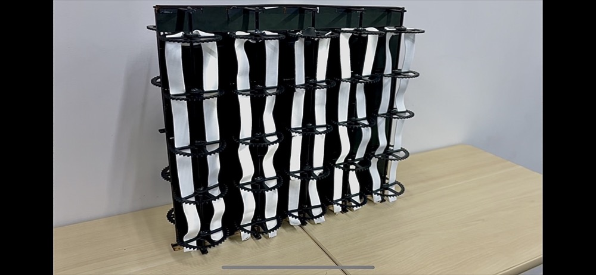
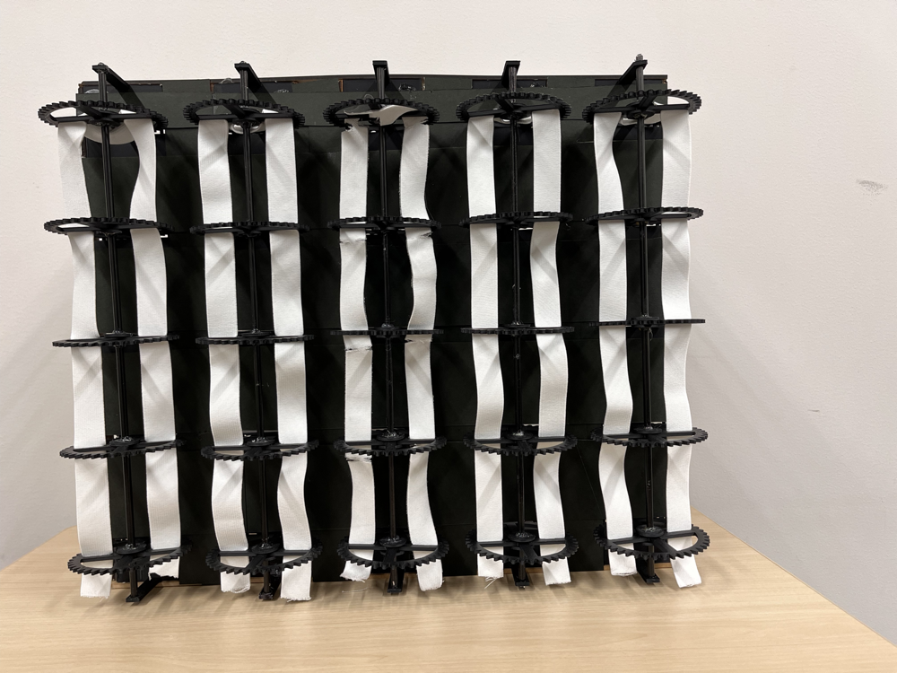
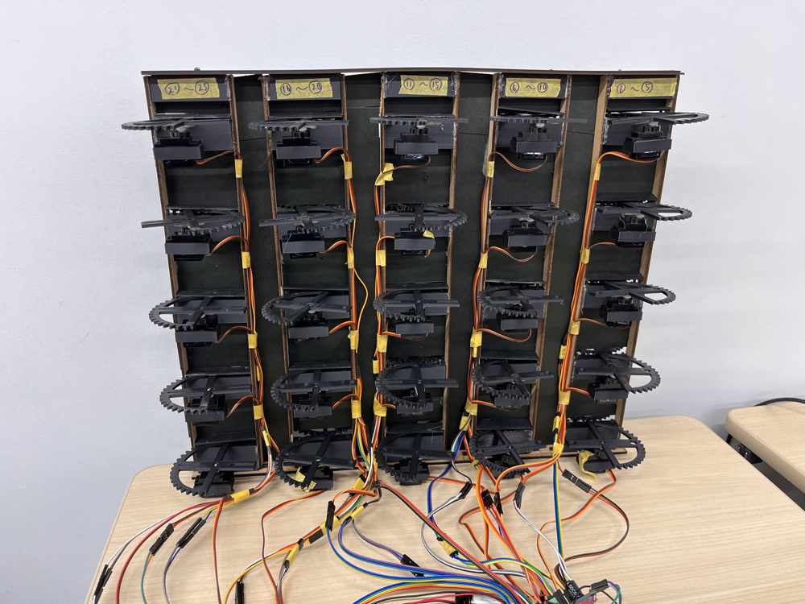
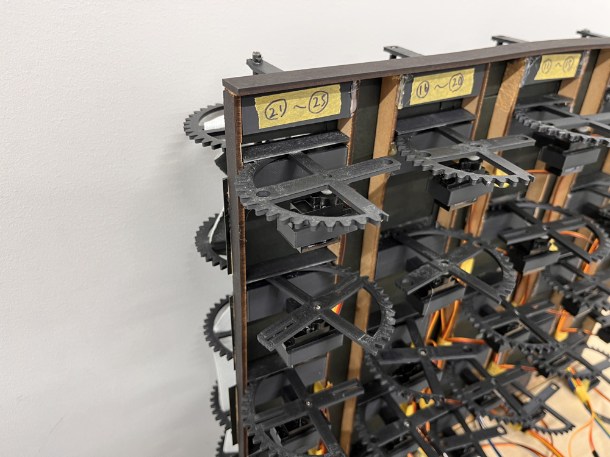

Twisted Band Display

Open on YouTubeTechnology
- Arduino
- Servo Motor
- Elastic String
Twisted Band Display is a display that uses the twisting of two parallel strings and a gear mechanism.
By twisting the two strings so that they cross, the front and back sides of the strings are inverted and the color on the reverse side becomes visible.
This twisting motion allows smooth vertical animation, and switching between the two sides of the strings enables pixel-like information display.
The twisting of the strings is controlled by 25 servo motors using Arduino. This work was presented at the Visual Expression and Art Science Forum 2024.


